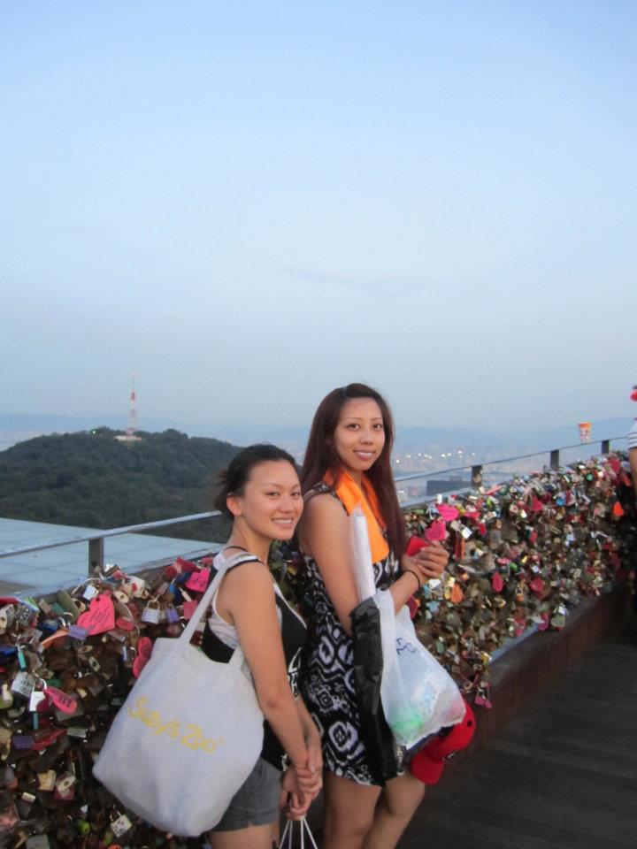
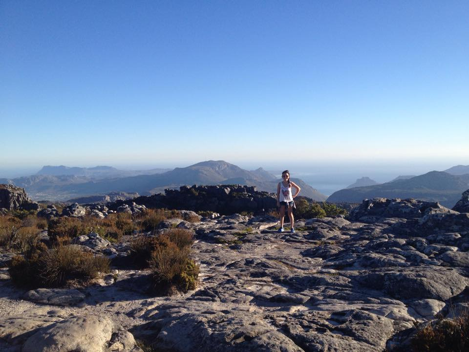
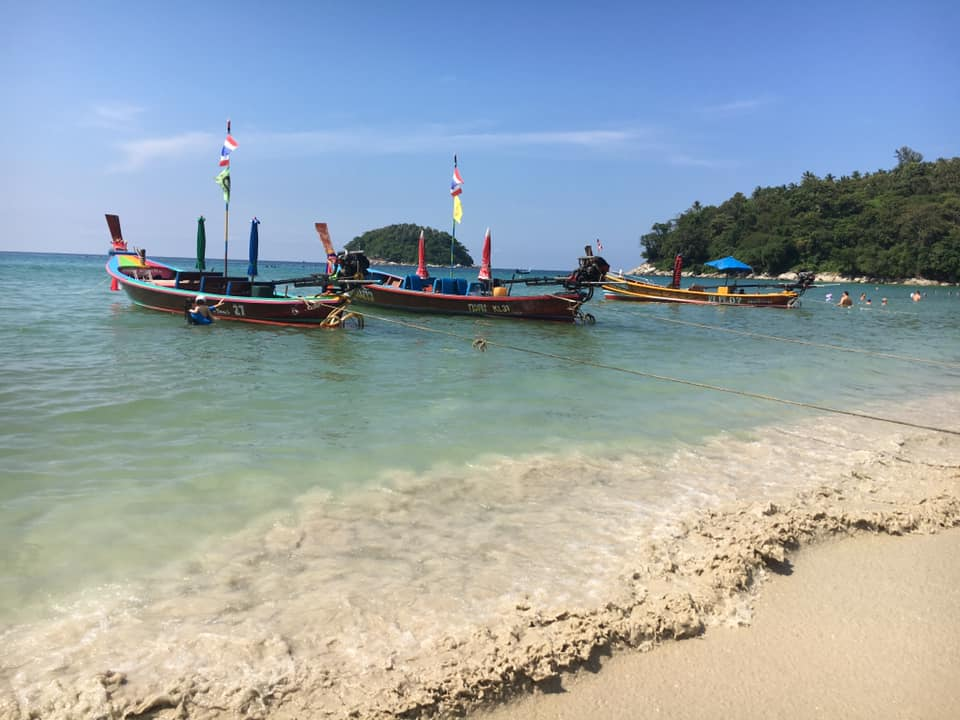

Osaka, Japan
In 2011, I went to Osaka, Japan, for my study abroad program. It was at the end of the same month when
one
of the worst and deadliest tsunamis in Japan’s history devastated the Miyagi Prefecture, which is in northeastern coast of Japan. They
felt
small earthquakes for months afterwards. Osaka was about an 8-hour car ride east of the Miyagi Prefecture, and although life in Osaka was not
affected by the tsunami, I was able to tell how much the economy was affected by the climbing currency exchange rate.
Japan was beautiful, and the people were so kind. I felt very at peace when I lived there; it was a feeling I’d never felt before and it was a wonderful feeling. Luckily, I was there during the spring semester, so I was able to enjoy the beautiful cherry blossoms. They were everywhere! I even had a chance to travel to the countryside for an overnight stay, and was able to admire the beauty of a valley surrounded by mountains.
During my time in Japan, I stayed with a host family; a mother and a daughter. They were so sweet and kind. It allowed me to experience living like a local, have traditional Japanese dinners in a home setting, and I was able to practice daily conversations in Japanese. At the University, I was able to meet and make friends from all over the world. I've been dreaming about living in Japan since my high school days and it finally came true! I will always cherish the experience.
After the semester was over, my cousin came to Japan to travel around Japan with me, and for a week we experienced Tokyo and Kyoto. In Tokyo, we visited Akihabara, which is the anime district, we saw the Tokyo Tower, we walked around Odaiba at night, and got to experience their crazy subway lines. There was a time when we were stuck in the subway for 40 minutes trying to figure out how to navigate the subway lines. We gave up and went back up to the streets to walk to where we wanted to go. It was really tough not having GPS and relying only on a paper map, so that would be my number one advice: have GPS. Or just have WiFi on your smart phone. After a few days, we were off to Kyoto on the night bus and spent the whole next day bike riding all over Kyoto. We visited famous shrines, saw Geishas, did some shopping, and ate delicious food. Kyoto is so beautiful and full of cultural charm; it’s a must for any Japan itinerary.
Japan was beautiful, and the people were so kind. I felt very at peace when I lived there; it was a feeling I’d never felt before and it was a wonderful feeling. Luckily, I was there during the spring semester, so I was able to enjoy the beautiful cherry blossoms. They were everywhere! I even had a chance to travel to the countryside for an overnight stay, and was able to admire the beauty of a valley surrounded by mountains.
During my time in Japan, I stayed with a host family; a mother and a daughter. They were so sweet and kind. It allowed me to experience living like a local, have traditional Japanese dinners in a home setting, and I was able to practice daily conversations in Japanese. At the University, I was able to meet and make friends from all over the world. I've been dreaming about living in Japan since my high school days and it finally came true! I will always cherish the experience.
After the semester was over, my cousin came to Japan to travel around Japan with me, and for a week we experienced Tokyo and Kyoto. In Tokyo, we visited Akihabara, which is the anime district, we saw the Tokyo Tower, we walked around Odaiba at night, and got to experience their crazy subway lines. There was a time when we were stuck in the subway for 40 minutes trying to figure out how to navigate the subway lines. We gave up and went back up to the streets to walk to where we wanted to go. It was really tough not having GPS and relying only on a paper map, so that would be my number one advice: have GPS. Or just have WiFi on your smart phone. After a few days, we were off to Kyoto on the night bus and spent the whole next day bike riding all over Kyoto. We visited famous shrines, saw Geishas, did some shopping, and ate delicious food. Kyoto is so beautiful and full of cultural charm; it’s a must for any Japan itinerary.

Busan and Seoul, South Korea
After Kyoto, we went to Fukuoka, Japan to catch our ferry to Busan, South Korea. The ferry tickets had to be purchased outside of Japan, so luckily my cousin was able to purchase them for us prior to flying out to Japan. It was a quick 3-hour ride, and inexpensive for a one way ticket.
Busan was wonderful, and the people were nice and welcoming. A few friends came to meet us from Seoul, and they were able to take us around Busan. The first thing we did was take a taxi up to a small village in the mountains and had lunch at a cozy little restaurant. It was such a refreshing experience. We did so many activities afterwards that it’d take me awhile to put it all into words, so I will just say, I had an amazing time!
The next day we took the train to Seoul, the capital and largest city in South Korea. We stayed there for 4 days, and my friends were kind enough to take off the week from work and show us around. I absolutely LOVED the food. Everything was delicious and I wished I could’ve stayed longer, just to have more time to eat. I would go back to South Korea just for the food. The culture and architectural space are also very interesting. Just like Japan, they have old and new buildings nested together within parts of the city and I find it very charming. We visited the Nam Sam Tower, some museums, and of course, we did a lot of shopping. Overall South Korea was a memorable and amazing trip, and I plan to go back soon.
The next day we took the train to Seoul, the capital and largest city in South Korea. We stayed there for 4 days, and my friends were kind enough to take off the week from work and show us around. I absolutely LOVED the food. Everything was delicious and I wished I could’ve stayed longer, just to have more time to eat. I would go back to South Korea just for the food. The culture and architectural space are also very interesting. Just like Japan, they have old and new buildings nested together within parts of the city and I find it very charming. We visited the Nam Sam Tower, some museums, and of course, we did a lot of shopping. Overall South Korea was a memorable and amazing trip, and I plan to go back soon.

Cape Town, South Africa
In 2014, I went to Cape Town, South Africa for a two-month, unpaid internship as part of my undergrad
program. I worked with the non-profit called Operation Smile, which help children undergo surgical
operations to fix their cleft palate. They do such amazing work, and I am grateful to have been a part
of
their office team.
There were so many beautiful and romantic places around and in Cape Town. I went to several beaches, hiked up to Table Mountain (one of the Seven Wonders of the world), hiked other smaller mountains and hills, visited botanical gardens, whale watched, ate at many different food markets, and did some shopping. The only thing I didn’t do was a Safari. It was tempting but the excursion was for three days and I didn’t have that kind of time. One of the highlights during my time there, was when I took a trip out to Robben Island. It is the island where Nelson Mandela was imprisoned. The tour guide showed us his cell, where he sat to read/write his books, and his routines during imprisonment. Most of the tour guides used to be prison inmates, so that was interesting.
It was a very different experience from Japan, since it wasn’t as carefree and I didn’t feel that peacefulness I felt in Japan, but it was still a very memorable and interesting experience. Even though Cape Town was beautiful, there was also the dark side of the city. There was a lot of theft and mugging, and homelessness was also a big problem. Even after the apartheid, segregation was still very much alive. Luckily, I did not experience anything worse than catcalls during my walks to and from my internship. Cape Town has always been on my bucket list, although I never dreamt I’d be able to live there. The experience will definitely stay with me. Unlike Japan and South Korea, I do not plan to go back to visit. I think Cape Town was great as a one-time experience.
There were so many beautiful and romantic places around and in Cape Town. I went to several beaches, hiked up to Table Mountain (one of the Seven Wonders of the world), hiked other smaller mountains and hills, visited botanical gardens, whale watched, ate at many different food markets, and did some shopping. The only thing I didn’t do was a Safari. It was tempting but the excursion was for three days and I didn’t have that kind of time. One of the highlights during my time there, was when I took a trip out to Robben Island. It is the island where Nelson Mandela was imprisoned. The tour guide showed us his cell, where he sat to read/write his books, and his routines during imprisonment. Most of the tour guides used to be prison inmates, so that was interesting.
It was a very different experience from Japan, since it wasn’t as carefree and I didn’t feel that peacefulness I felt in Japan, but it was still a very memorable and interesting experience. Even though Cape Town was beautiful, there was also the dark side of the city. There was a lot of theft and mugging, and homelessness was also a big problem. Even after the apartheid, segregation was still very much alive. Luckily, I did not experience anything worse than catcalls during my walks to and from my internship. Cape Town has always been on my bucket list, although I never dreamt I’d be able to live there. The experience will definitely stay with me. Unlike Japan and South Korea, I do not plan to go back to visit. I think Cape Town was great as a one-time experience.

Thailand
In 2018, I decided to go to Thailand for vacation. It ended up being a solo vacation, which was a first
for
me. It would be the first time I returned to Thailand since before coming to the U.S. I had a great
time; I
went to Phuket to see the beaches and ate exotic fruits, then spent the rest of the time in Bangkok. I
took
a bike tour and a food tour; both were great and helped me see more of the city. I wanted to relax so I
didn’t do a lot of traveling around to other cities, and I didn’t try too hard to do touristy
activities.
Even though I enjoyed my trip, I realized there were pros and cons to traveling solo. The biggest pro was that I could do whatever I wanted on a whim, and the biggest con was that I wasn’t able to taste/eat as much food as I liked to. In Phuket, I had gone to a food festival/market and even though I wanted to buy everything, I couldn’t because I wouldn’t have had the time or stomach capacity to eat them all. I ended up with four food items and I almost couldn’t finish them. It was the same for Bangkok; there were so many different dishes to try but I could only eat so much without wasting food.
Overall, I think everyone should try a solo vacation at least once, but as a woman, choose a safe country to go to. I felt pretty safe during my time in Thailand and didn’t run into any problems. People were very nice and helpful, and I had Google Translate to help me most of the time. I would love to go back to Thailand and visit Chiang Mai in Northern Thailand, or to Krabi, an beautiful island in the south that has not been ruined by tourism. Yet.
Even though I enjoyed my trip, I realized there were pros and cons to traveling solo. The biggest pro was that I could do whatever I wanted on a whim, and the biggest con was that I wasn’t able to taste/eat as much food as I liked to. In Phuket, I had gone to a food festival/market and even though I wanted to buy everything, I couldn’t because I wouldn’t have had the time or stomach capacity to eat them all. I ended up with four food items and I almost couldn’t finish them. It was the same for Bangkok; there were so many different dishes to try but I could only eat so much without wasting food.
Overall, I think everyone should try a solo vacation at least once, but as a woman, choose a safe country to go to. I felt pretty safe during my time in Thailand and didn’t run into any problems. People were very nice and helpful, and I had Google Translate to help me most of the time. I would love to go back to Thailand and visit Chiang Mai in Northern Thailand, or to Krabi, an beautiful island in the south that has not been ruined by tourism. Yet.